More pictures to come shortly... they are being developed!
OCTOBER 2004
Trip to Hawaii
Day 1 & 2 - Sunday October 24, 2004 & Monday October 25, 2004
| 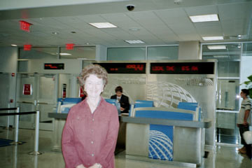 | 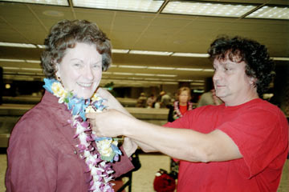 | 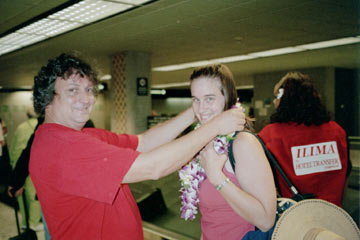 |
| In Houston (IAH) waiting to leave | Mark giving us our lei greeting | |
| 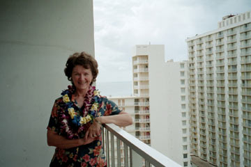 | 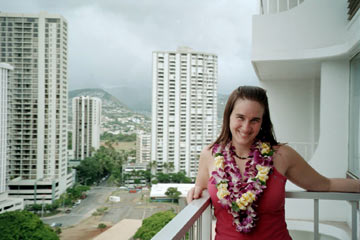 | 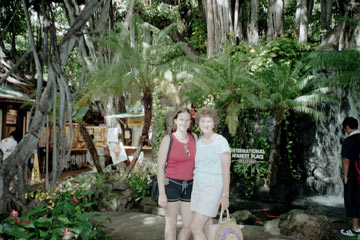 |
| Mom with one view from our hotel | Me and the other view | International Market Place - Shopping!! |
| 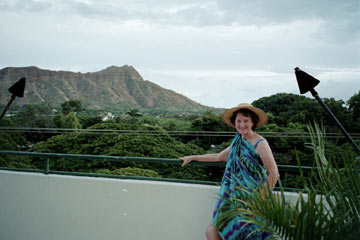 |  |
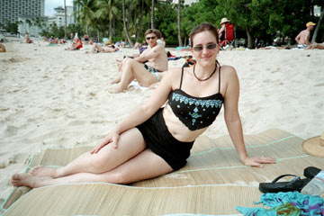 |
| Diamond Head view from our hotel | Jane of the jungle, near Waikiki Beach | Me on Waikiki Beach |
 |
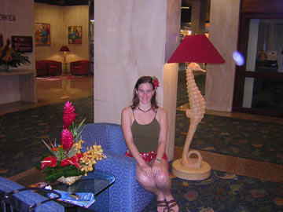 | 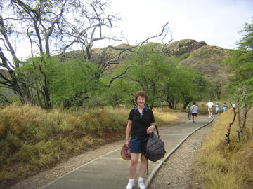 |
| Mom on Waikiki Beach | Me in the Aston Beach Hotel lobby | Our first hike - Diamond Head |
| 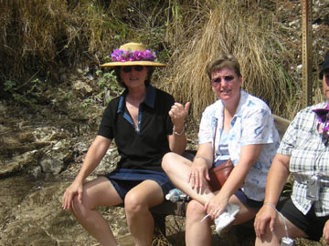 | 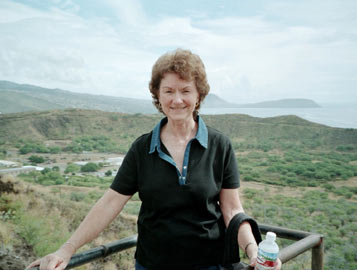 | 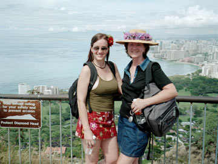 |
| Mom resting during the Diamond Head hike | Almost there -- only 256 steps to go! | Picture courtesy of our tour guide, Sev |
| 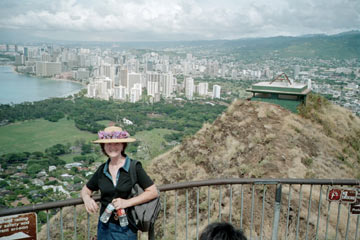 | 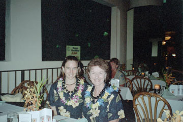 | 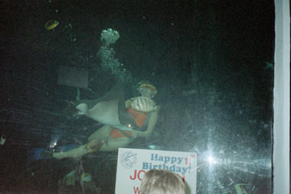 |
| She made it! | At the Oceania Restaurant | Feeding the graceful Spotten Eagle Ray |
Day 3 - Tuesday, October 26, 2004
| 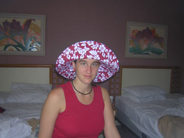 | 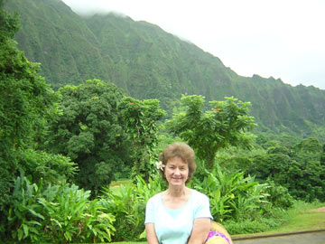 | 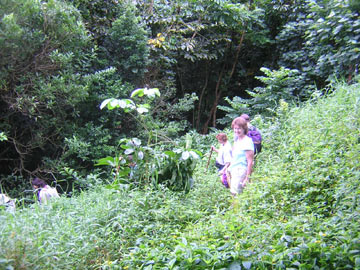 |
| Me in my floppy Hawaiian Hat! | Mom in glorious Hawaii | Mom on the Rainforest Hike |
| 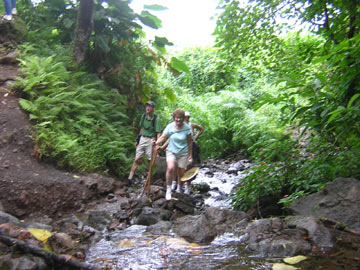 | 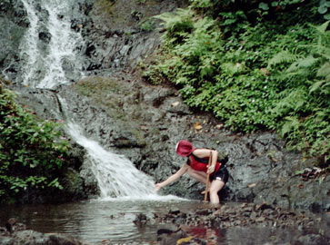 | 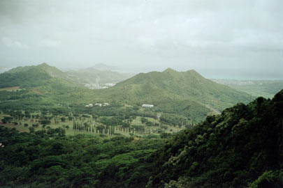 |
| Mom coming up on the waterfall on the Rainforest Hike | Me in the waterfall | View from the top |
 |
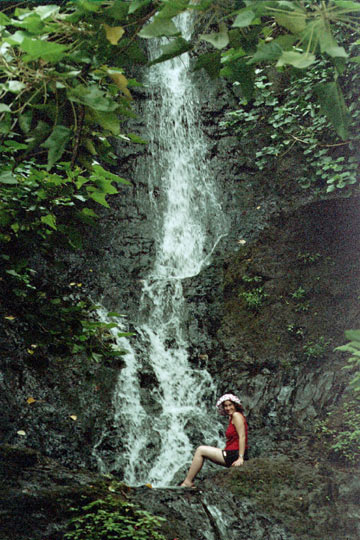 | 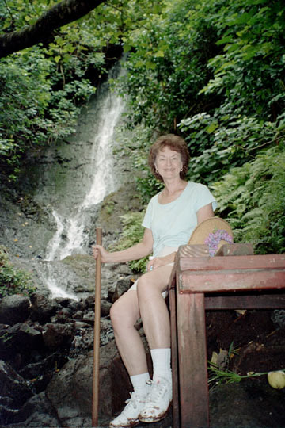 |
| Me again - I really love water! | Especially Waterfalls | Mom at the top of the hike |
| 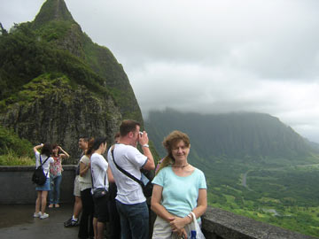 | 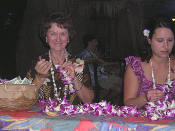 | 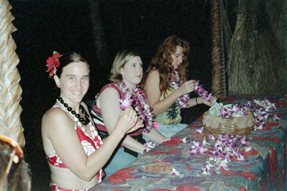 |
| Mom somewhere in Hawaii - I forget where! | Making Leis at the Paradise Cove Luau | Me at Paradise Cove making a lei |
| 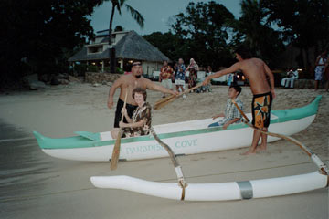 | 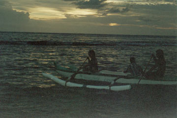 | 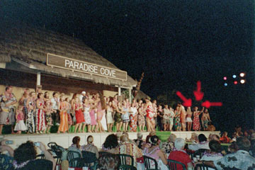 |
| Mom on her canoe ride! | ... in the fading sunset | Mass Hula performance - that little dot is me! |
| 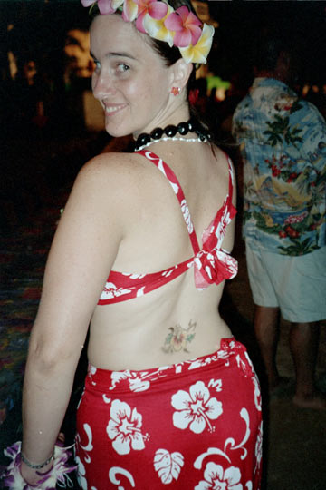 | 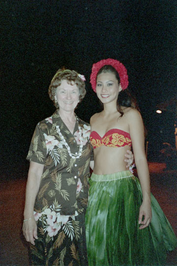 | 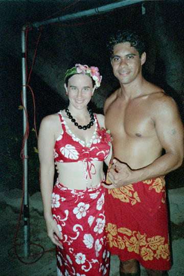 |
| My hibiscus "tattoo" | Mom with a beautiful island girl | Me with a beautiful island boy! |
Day 4 - Wednesday, October 27, 2004
| 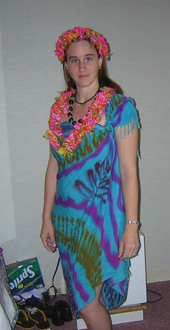 | 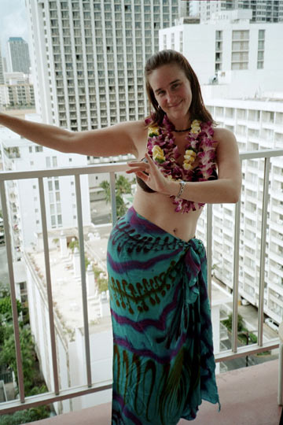 | 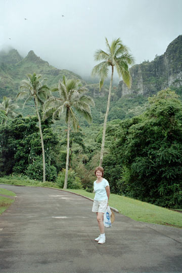 |
| All dressed up and no place to go... as the boat left before we got there for our dinner cruise! Talk about missing your ship when it comes in! | Okay -- this is actually from the day we arrived, but I don't have many pictures from today. I went SCUBA diving and held an OCTOPUS (still waiting for the picture from that!)... | ... and Mom went to the Pearl Harbor site. However, this is a much better picture of her waiting for the Rainforest Hike. You're beautiful mom! |
Day 5 - Thursday, October 28, 2004 - Screening of Liberty Bound
| 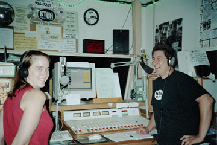 | 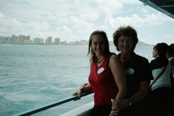 | 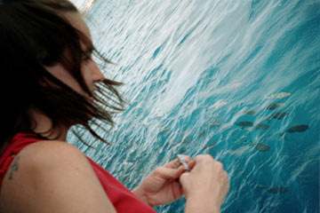 |
| The day started with a Radio Interview on the U of H campus | Then a spontaneous cruise on the "Star of Honolulu" | Fun Fish Feeding Frenzy! |
| 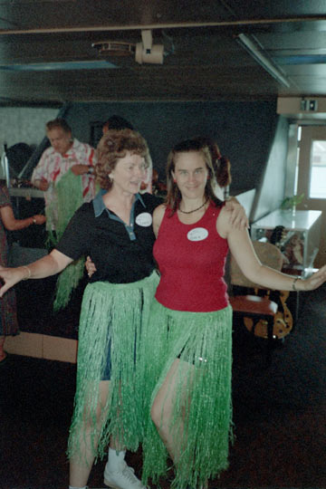 | 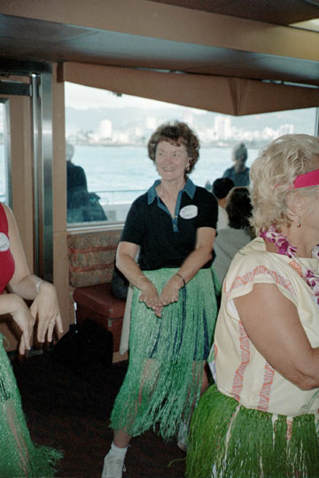 | 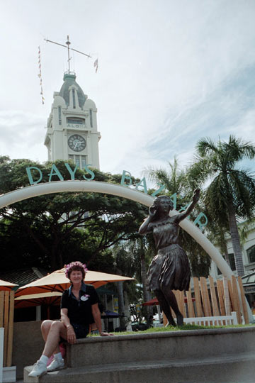 |
| ...with cheesy grass skirts | And I FINALLY got her to Hula | The Aloha Tower |
| 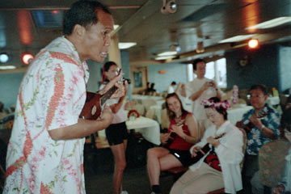 | 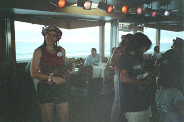 | 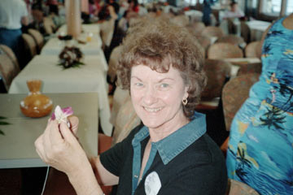 |
| Our Ukulele instructor & me in "class." | My Ukulele performance | Mom making leis -- we did that a lot! :-) |
 |
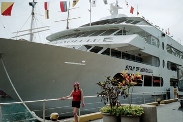 | 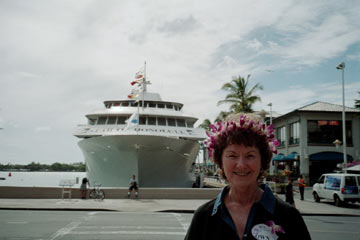 |
| with the Captain ... | The ship | The dock |
| 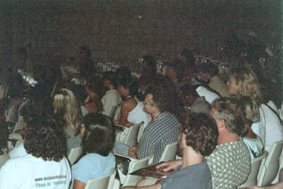 | 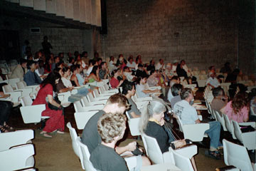 | 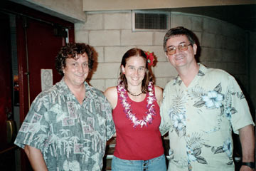 |
| My audience at the Liberty Bound screening | 3rd largest at 100 | Me with my host Mark (left) |
Day 6 - Friday, October 29, 2004 - Tour & Going Home
Mom by the decapitated dragon
Me giving our leis to this gorgeous statue
Dreaming of the beach
At the Dole Pineapple Plantation
Outside the great Dole Pineapple Maze
Lost inside the maze
...still lost inside the maze!
Mom tossing her lei out to sea... they both came back!
Tossing my lei out to sea... it didn't come back :-(
Home again...
... with our honeys.